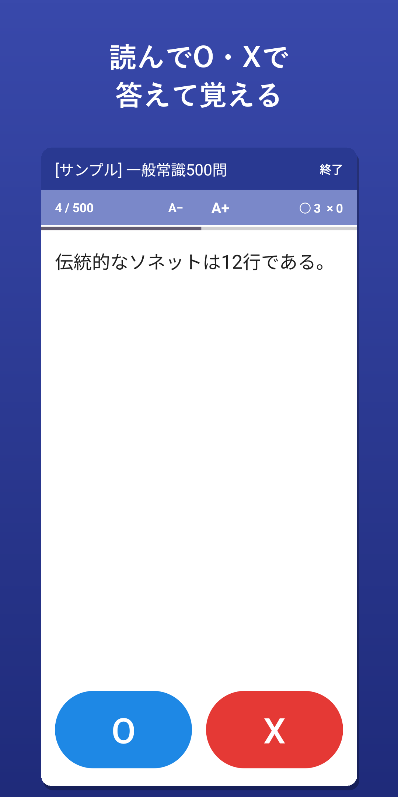
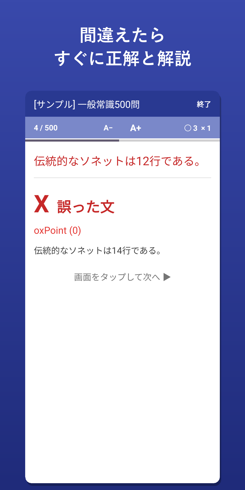
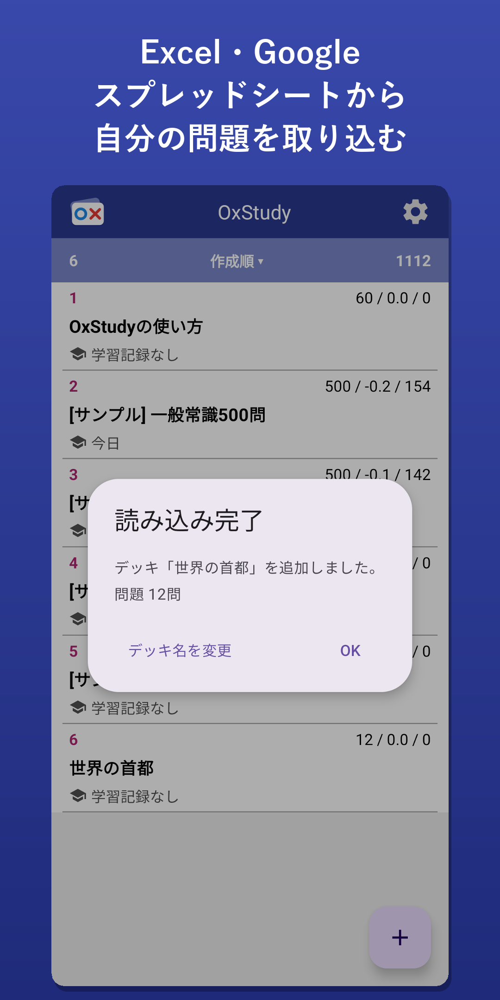

医学部の講義内容、司法試験・資格試験の問題文、単語の意味、一般常識など、「正しい/誤り」で確かめられる内容ならなんでもOxStudyのデッキ（問題のまとまり）にできます。
こんな学習に
- 医学部の基礎医学の暗記：生理学・病理学・薬理学
- 司法試験・予備試験の短答対策
- 宅建・運転免許の学科試験・各種資格試験の一問一答
- 過去問の肢別チェック（自作デッキ）
- 英単語・用語の暗記、韓国語（EPS-TOPIK・TOPIK）の学習
- 通勤中の聞き流し学習
5つのモード
テストモード
制限時間(5〜40秒)内に○×を押します。まちがえると正解と解説が表示され、終わったら不正解の問題だけをもう一度解けます。
リストモード
選んだ問題を正解・解説といっしょに、本を読むように見られます。右側のつまみをドラッグすると好きな位置へすぐ移動できます。
カードモード
触らなくても文の長さに合わせて次のカードへ進むフラッシュカードです。
オーディオモード
問題文・正解・解説を読み上げます(1〜2倍速)。画面を消しても読み続け、スリープタイマーもあります。
編集モード
問題の追加、誤字の修正、検索。
苦手な問題から：oxPoint
問題ごとにoxPointがたまります。テストで正解すると+1、不正解や時間切れで−1です。「−2以下」のように覚えきれていない問題だけ、またはまだ解いていない問題だけを選べます。
Excel・Googleスプレッドシートでデッキを作る
A列に問題文、B列に正解(O/X)、C列に解説を入れたExcel(.xlsx)やGoogleスプレッドシートをそのまま取り込めます。列をそろえた空の様式もアプリから書き出せます。
| A: 問題文 | B: 正解 | C: 解説 |
|---|---|---|
| 水は1気圧で100 °Cで沸騰する。 | O | 海面の高さ(1気圧)が基準です。 |
| 太陽は惑星である。 | X | 太陽は恒星です。 |
最初から入っているサンプルデッキ
- 医学部の基礎医学：生理学100問・病理学100問・薬理学100問（全問解説つき）
- 一般常識300問、科学常識300問
- 運転免許 学科試験（お試し）、宅建試験の宅建業法（お試し）
- EPS-TOPIK 韓国語○×100問（全問日本語解説つき）
サンプルデッキは練習用のため、内容の正確さは保証しません。
そのほか
- デッキを.oxstudyファイルでやりとり、すべてのデッキを学習記録ごとバックアップ
- 文字の大きさ90〜400%
- 表示言語：日本語・English・한국어・Tiếng Việt・Español・繁體中文
- スマホ・タブレット対応
- 無料（広告あり）。問題を解いている間やカード・オーディオの再生中には広告は表示されません。デッキと学習記録はスマホの中にだけ保存されます。